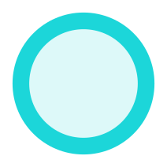

Each  represents a USGS stream gauge. Click it to view water levels over the past week.
Use the and to zoom in and out, and the to reset the map bearing to North
Use the to center the map on your current location
Zooming in on the map will reveal satellite imagery
The lands and waters you're enjoying have been stewarded by peoples including the Umpqua, Wasco, Walla
Walla, Piute, Cayuse, Umatilla, Siletz, Klamath, Modoc, Kalapuya, and Molalla for 11 thousand years. For
most of that time, there were a lot more fish. However, the genocide and land theft resulting from
colonial expansion have degraded the environment and repressed the indigenous knowledge woven into the
landscape.
Recognize that these tribes are still here, resilient, and actively working to preserve their cultural
heritage. Initiatives like CRITFC and Ambodat are leading efforts to reclaim lands, waters, and first
foods (such as salmon, steelhead, lamprey, C'waam, and Koptu). By safeguarding these vital resources,
the tribes are not only ensuring their own sustenance but also protecting the land's ecological balance
and cultural significance.
When you're out there, treat the land with respect and honor the legacy of those who have known and
cared for these places for thousands of years. Consider the ongoing efforts of these tribes and the
importance of supporting their initiatives towards land reclamation, cultural preservation, and
environmental stewardship.
Water levels data comes from USGS' Instantaneous Values Web Service
Basemap data comes from mapbox, OpenStreetMap, and Maxar
All icons come from svgrepo
This application is hosted on github